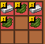
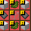
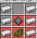
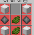
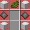

استمتع بعالم مدهش من المغامرات والقتال في سيرفرنا المميز.
تعريف سيرفر Global Strife
"Global Strife" هو سيرفر دولي فريد من نوعه يجمع اللاعبين من جميع أنحاء العالم في تجربة تفاعلية تحاكي السياسة العالمية، الاقتصاد، والحروب. يقدم السيرفر بيئة مثيرة حيث يمكن لكل لاعب اختيار دولة وتطويرها على الصعيدين الاقتصادي والعسكري.
---
ما يميز السيرفر:
1. التنوع العالمي:
يضم السيرفر جميع الدول، مما يمنحك الحرية الكاملة لاختيار الدولة التي ترغب في تمثيلها وتطويرها.
2. حرية التخصيص والتطوير:
كلاعب، يمكنك بناء دولتك، تعزيز اقتصادها، تشكيل سياساتها، وتقوية جيشها بأحدث الأسلحة.
3. الموارد المتاحة:
الأسلحة:
دبابات، طائرات، سفن حربية.
أسلحة نارية متطورة مثل:
البندقية الأمريكية M16.
الكلاشينكوف الروسية AK-47.
4. نظام الأمم المتحدة:
يضم السيرفر هيئة الأمم المتحدة حيث تُناقش القضايا الدولية ويتم حل النزاعات السياسية والدبلوماسية.
5. الإعلانات والأخبار الدولية:
استمتع بمتابعة الإعلانات الرسمية وآخر الأخبار لتبقى على اطلاع بالتوترات السياسية والاقتصادية.
6. أحداث متنوعة:
حروب عسكرية، اقتصادية، وسياسية: قم بقيادة دولتك للفوز في الحروب وفرض سيطرتك.
توترات دولية ومنظمات سرية: شارك في المؤامرات والتحركات السرية لتغيير ميزان القوى.
7. المنظمات العالمية والتحالفات:
انضم إلى تحالفات عسكرية، اتحادات اقتصادية، أو منظمات عالمية لبناء شبكة من العلاقات الدولية.
العب دورًا رئيسيًا كجزء من الأقطاب السياسية العالمية أو اختر أن تكون دولة محايدة.
8. الأنظمة السياسية المختلفة:
تبنَّ أحد الأنظمة السياسية التي تناسب استراتيجيتك:
النظام الشيوعي لإدارة الدولة بقبضة اقتصادية قوية.
النظام الديمقراطي لتحقيق رضا الشعب وإقامة التحالفات.
النظام الاشتراكي لتوزيع الموارد وتحقيق المساواة.
---
لماذا تنضم إلى "Global Strife"؟
يمنحك السيرفر فرصة لتجربة محاكاة شاملة للعالم الحقيقي في أجواء تفاعلية. سواء كنت ترغب في بناء دولة قوية اقتصاديًا، تكوين تحالفات استراتيجية، أو الدخول في صراعات عسكرية، فإن "Global Strife" هو المنصة المثالية.
هل أنت مستعد لتغيير مجرى التاريخ؟
انضم الآن وابدأ في تشكيل مستقبلك العالمي!
نحن فريق من اللاعبين المحترفين الذين يعملون على توفير أفضل تجربة لعب في سيرفرات ماين كرافت المخصصة للممالك.
من نحن
نحن فريق من اللاعبين المحترفين الذين يعملون على توفير أفضل تجربة لعب في سيرفرات ماين كرافت المخصصة للممالك.
اسمائمهم ومهمتهم
| Id |
Date |
responsible |
Rank |
Names |
| 8 |
2007 |
كل شئ |
رئيس سيرفر(ا) |
Mohamed XD |
| 11 |
2007 |
مسوؤل ديسكورد&ماين كرافت$ صانع موقع |
نائب رئيس |
Mahmoud Axe |
| 67 |
2007 |
مودات ماين كرافت &ماين كرافت |
اداري (.) |
Mohamed SG |
| 20 |
2008 |
ديسكورد &ماين كرافت |
اداري (,) |
Mohamed Amine |
| 97 |
2008 |
ماين كرافت |
اداري (,) |
mahmoud maincraft |
- (ا) يعني رئيس اساسي
- (نقطه او .) يعني اداري درجه اولي
- (فاصله او ,) يعني اداري درجه ثانيه
mods
لا يكمل سيرفر دول من دون مودات عسكريه
لهذا جئنا لكم بافضل واحدث المودات
المودات العسكريه
| اسم السلاح |
الذخيره |
|
HK MPS-A5
|
HK MPS-A5 30rnd Mag
|
|
Mossberg 500
|
12 Gauge Cartridge
|
|
M4A1
|
M4A1 30rnd Mag
|
|
M249
|
M249 200rnd Mag
|
|
Glock 18c
|
Glock 18c 17rnd Mag
|
|
Glock 17
|
Glock 17 17rnd Mag
|
|
FN FAL
|
FN FAL 20rnd Mag
|
|
Desert Eagle
|
Desert Eagle 10rnd Mag
|
|
AWP
|
AWP 10rnd Mag
|
|
AK-47
|
AK-47 30rnd Mag
|
|
AK-12
|
AK-12 30rnd Mag
|
|
M67 Grenade
|
لا يوجد فقط تفجير
|

| دروع جيش درجه اولي |
طريقه الصنع |
دروع جيش درجه خاصه |
طريقه صنع |
|
6B46 Ratnik-BSh Helmet
|

|
juggernaut Helmet
|

|
|
6B3 Body Armor
|

|
juggernaut Chestplate
|

|
|
juggernaut leggings
|

|
juggernaut leggings
|
|
|
juggernaut Boots
|

|
juggernaut Boots
|
|
شرح أهم الموارد والآلات
-
🔫 Gun Workbench
تُستخدم لصناعة الأسلحة مثل AK-12
-
🗃️ Ammo Workbench
لصناعة الطلق مثل AK-12 30rnd Mag
من أهم الموارد التي تساعد في صناعة الأسلحة:
-
⚙️ Gunmetal Ingot
يمكن صناعته باستخدام موارد مختلفة.
-
🔩 Gunmetal Scrap
يُصنع باستخدام الحديد، النحاس، والفحم.
- 🛠️ Iron
- ⚡ Copper
- 🔥 Coal
من أهم الموارد المستخدمة في صناعة الدروع:
-
📦 Plastic Plate
يمكن صناعته باستخدام البلاستيك الخام.
-
🧪 Plastic Mass
يُصنع باستخدام دلو مملوء بالبترول.
-
⛽ Bucket with Petroleum
يُستخدم لصناعة البلاستيك.

نحن دائمًا متحمسون أن يأتي إداريون جدد
قدِّم من هنا:
التقديم الآن